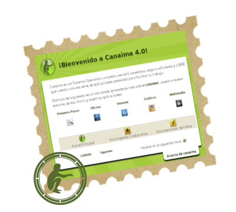
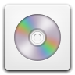

Canaima GNU/Linux 4.0
Canaima 4.0 está basada en debian (7) de nombre código “Kerepakupai” en honor al Kerepakupai Vená, nombre originario (Pemón) de la caída de agua más alta del mundo, ubicada en el Parque Nacional Canaima, en Venezuela.
Canaima 4.0 presenta las siguientes características:
- Escritorio Gnome 3.4
- Kernel Linux 3.2.0
- Servidor de ventanas X.org 7.7
- Suite Ofimática LibreOffice 4.0.1
- Navegador Web Cunaguaro 22.0
- Cliente de Correo Guácharo 17.0.5
- Programa de manipulación de imágenes GIMP 2.8
- Editor de gráficos vectoriales Inkscape 0.48
- Lenguaje Python 2.7/3.2
- Lenguaje Perl 5.14
Paquetes de Canaima 4.0
- Canaima Notas Gnome
- Canaima Plymouth
- Guacharo
- Cunaguaro
- Software Center
- Canaima Accesibilidad gdm Gnome
- Prometeo ABC
- Gnome Shell Extensions Gnamon
- Canaima Bienvenido Gnome
- Jockey
- Canaima Fondos Dinámicos
AplicacionesDestacadas
Canaima Bienvenido Gnome
Rediseño de la aplicación Canaima-bienvenido basando en huayra-bullets de la distribución argentina Huayra Linux. Muestra una ventana al inicio con las aplicaciones más usadas e información para asistir al usuario con la introducción en el uso del Sistema Operativo.
Jockey
El jockey proporciona una interfaz de usuario para la configuración de controladores de terceros, tales como los diversos módulos del núcleo LAN inalámbrica Nvidia y ATI fglrx X.org.
Centro de Software
El centro de software te da acceso instantáneo a miles de aplicaciones en software libre, de todo tipo y para todos los gustos. Descubre interesantes aplicaciones con un solo click.
Accesibilidad en Canaima GNU/Linux
- Voz Silvia (Guadalinex)
- Fuente de Lenguas de señas Venezolanas
- Orca 3.4.2-2
- Prometeo ACB
- Gcompris
Prometeo ABC
Es un aplicación que contiene el abecedario en lengua de señas Venezolana, para niños y personas con Discapacidad auditiva. Hecho totalmente en Blender con la colaboración del colectivo Blender-Chevere.
LibreOffice
Una suite de productividad moderna fácil de usar para procesar texto, hojas de cálculo, presentaciones y más. En Canaima viene incluido por defecto con la versión 4.1.0.4.
Laboratorio
de
Usabilidad1er Laboratorio de Usabilidad de Canaima
Realizada el 25-04-13 en la Universidad Nacional Experimental Marítima del Caribe (UMC), ubicada en Catia La Mar, Estado Vargas, contando con la participación activa de la comunidad estudiantil, docentes, personal obrero y administrativo de la UMC y compañeros de la Comunidad de Software Libre.
Gnome Shell Gnamon
Es un conjunto de paquete que contiene las extensiones , el tema y las fuentes de Gnamon. Surgen tras el 1er laboratorio de usabilidad , en el cual las pruebas realizados arrojaron las necesidades de los usuarios de tener un entorno que le brinda una mejor experiencia al usuario en su interacción con el sistema.
7ma Cayapa Canaima
Las Cayapas son el espacio para intercambiar ideas, dar sugerencias y aportes que contribuyan a mejorar el sistema de operaciones venezolano Canaima GNU/Linux
Mesas de Trabajo
- Jockey Detector de Hardware
- Canaima Instalador
- Canaima Medios
- Tribus
- Cimarron
- Shabono - Sistema de Gestión Hotelera
- Plataformas Web de Canaima
- Mesa de verificación de Canaima 4.0
- Mesas Técnica de Accesibilidad
- Promover la certificación electrónica
- Sistema De Información Para Los Consejos Comunales
- Mapa de Ruta de la Siguiente versión de Canaima
- Aplicación YOJAMA
- Salvapantallas Bicentenario
- La Cayapa
- Canaima Educativo
- Sabor Canaima USB Live
- Canaima Base y tasksel
Procesos
para generar
Canaima EstableActividades del Equipo del Desarrollo
- Estructurar los componentes básicos del Sistema Operativo.
- Proveer un conjunto de aplicaciones para ofimática, multimedia e internet.
- Desarrollar aplicaciones en base a las necesidades de los usuarios.
- Proveer una experiencia de usuario libre de errores.
- Asegurar la calidad de los productos.
- Generar medios físicos instalables.


Canaima GNU/Linux 4.0
amd64
i386
no-pae